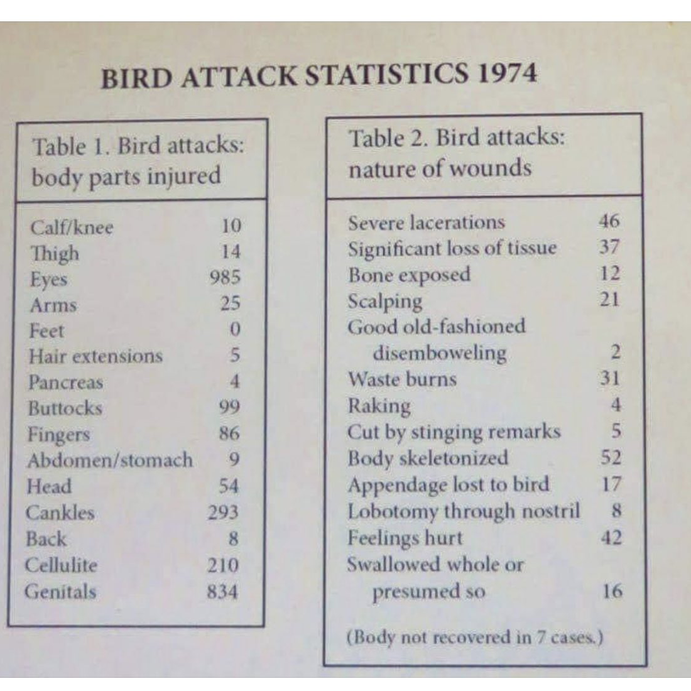

library(magick)
library(tesseract)
library(tidyverse)
library(patchwork)
library(kableExtra)1974…bird attacks?
A-well a bird bird bird…
Gotcha.
Around 11pm last night I saw this tweet:

Tom’s instinct makes perfect sense. My first thought was “CHICKEN WINGS.” So I spent a couple sleepless hours with this weird (and obviously fake) data set about bird attacks in 1974, because it felt like a good October distraction and an opportunity to get some data wrangling rust off.
In this post:
- Image cropping with magick
- Optical character recognition (OCR) with tesseract
- Low elegance, no shame data tidying in R
- Static & interactive visualizations in JavaScript with Plot & imported D3 charts
Get the tools and data:
Attach libraries:
Read in and crop the image with magick:
birds_img <- image_read("bird_attacks_tweet.jpg")
birds <- image_crop(birds_img, "1100x1100+50+200")Here’s the cropped version of the image:

Optical character recognition
Optical character recognition (OCR), or text recognition, lets you extract text information from images (e.g. non-selectable PDFs, JPEGs, PNGs, etc.). The tesseract package in R “provides R bindings to Tesseract: a powerful optical character recognition (OCR) engine that supports over 100 languages.”
Create the engine, then OCR those birds:
ocr_eng <- tesseract("eng")
text <- tesseract::ocr(birds, engine = ocr_eng)Take a look at the extracted text. I will never stop thinking this is amazing.
cat(text)BIRD ATTACK STATISTICS 1974
Table 1. Bird attacks: Table 2. Bird attacks:
body parts injured nature of wounds
Calf/knee 10 Severe lacerations 46
Thigh 14 Significant loss of tissue 37
Eyes 985 Bone exposed 12
Arms 25 Scalping 21
Feet 0 Good old-fashioned
Hair extensions 5 disemboweling 2
Pancreas 4 Waste burns 31
Buttocks 99 Raking 4
Fingers 86 Cut by stinging remarks 7
Abdomen/stomach 9 Body skeletonized 52
Head 54 Appendage lost to bird 17
Cankles 293 Lobotomy through nostril 8
Back 8 Feelings hurt 42
Cellulite 210 Swallowed whole or
Genitals 834 presumed so 16
(Body not recovered in 7 cases.)Cleaning
Here’s my “no regerts” code for data cleaning. I would love to see other ways that people wrangle these birds.
# Separating into columns
bird_dat <- data.frame(text) |>
mutate(text = strsplit(as.character(text), "\n")) |>
unnest(text) |>
filter(text != "") |>
slice(-c(1:2)) |>
separate(col = "text" ,
into = c("body_parts", "leftover"),
sep = "(?<=[a-zA-Z])\\s*(?=[0-9])",
extra = "merge") |>
separate(col = "leftover",
into = c("body_parts_count", "leftover"),
sep = " ",
extra = "merge") |>
separate(col = "leftover" ,
into = c("nature_of_wounds", "nature_of_wounds_counts"),
sep = "(?<=[a-zA-Z])\\s*(?=[0-9])",
extra = "merge") |>
slice(-1)
# Some artisanal hacking. Not proud, but tired...
bird_dat$nature_of_wounds[16] <- "Body not recovered"
bird_dat$nature_of_wounds_counts[16] <- bird_dat$body_parts_count[16]
bird_dat$body_parts[16] <- NA
bird_dat$body_parts_count[16] <- NA
# At this point, splitting into separate data frames:
body_parts_injured <- data.frame(body_parts = bird_dat$body_parts, n = bird_dat$body_parts_count) |>
drop_na()
wounds <- data.frame(wound_nature = bird_dat$nature_of_wounds,
n = bird_dat$nature_of_wounds_counts)
# Where nature_of_wounds_counts is NA, combine text w/ following row.
# No, this does not follow any cohesive data cleaning philosophy.
for (i in 1:(length(wounds$n) - 1)) {
if (is.na(wounds$n[i])) {
wounds$wound_nature[i+1] <- paste(wounds$wound_nature[i], wounds$wound_nature[i+1])
}
}
# Then get rid of the duplicate text rows still containing NA
wounds <- wounds |>
drop_na() |>
mutate(n = as.numeric(n))Which gives us these two data frames:
| body_parts | n |
|---|---|
| Calf/knee | 10 |
| Thigh | 14 |
| Eyes | 985 |
| Arms | 25 |
| Feet | 0 |
| Hair extensions | 5 |
| Pancreas | 4 |
| Buttocks | 99 |
| Fingers | 86 |
| Abdomen/stomach | 9 |
| Head | 54 |
| Cankles | 293 |
| Back | 8 |
| Cellulite | 210 |
| Genitals | 834 |
| wound_nature | n |
|---|---|
| Severe lacerations | 46 |
| Significant loss of tissue | 37 |
| Bone exposed | 12 |
| Scalping | 21 |
| Good old-fashioned disemboweling | 2 |
| Waste burns | 31 |
| Raking | 4 |
| Cut by stinging remarks | 7 |
| Body skeletonized | 52 |
| Appendage lost to bird | 17 |
| Lobotomy through nostril | 8 |
| Feelings hurt | 42 |
| Swallowed whole or presumed so | 16 |
| Body not recovered | 7 |
Viz those birds
I’m going to add JavaScript code for data visualization in OJS cells right in this Quarto doc. Curious about adding more JavaScript to your Quarto world? I highly recommend Sharon Machlis’ recent series, A beginner’s guide to using Observable JavaScript, R, and Python with Quarto.
Keep in mind that you can’t interactively execute JavaScript in RStudio – the output and any errors are only be returned upon rendering.So for any substantial viz building and prototyping in JavaScript, Observable is the place.
First, I’ll make my R objects available for use in OJS cells:
ojs_define(wounds = wounds)
ojs_define(body_parts_injured = body_parts_injured)At this point, I switch over to OJS cells – code fencing is shown for OJS cells below to clarify the switch from R. First step, I’ll make transposed versions of the data frames:
```{ojs}
//| echo: fenced
wounds_transpose = transpose(wounds)
injuries_transpose = transpose(body_parts_injured)
```Then some JavaScript visualizations.
Here, a bar chart created with Observable Plot. If you’re used to working in ggplot2, building visualizations following the grammar of graphics in Plot feels similar.
Plot accepts columnar (untransposed) data (thanks Fil!), as shown below. Notice that the first argument provided to Plot.barX() is wounds.n. Why not just wounds? Here, we need to provide an argument that has the correct length.
```{ojs}
//| echo: fenced
Plot.plot({
marks: [
Plot.barX(wounds.n,
{y: wounds.wound_nature, x: wounds.n,
sort: {y: "x", reverse: true},
fill: "navy"}
)
],
marginLeft: 200,
x: {label: "Number"},
y: {label: "Type of injury from bird attack"}
})
```Alternatively, we can pass our transposed data into Plot to make the same thing. This works just fine here, with a small data set. Once the number of rows gets very large, you may want to avoid transposition, and can use the “direct from columns” method above.
```{ojs}
//| echo: fenced
Plot.plot({
marks: [
Plot.barX(wounds_transpose,
{y: "wound_nature", x: "n",
sort: {y: "x", reverse: true},
fill: "navy"
})
],
marginLeft: 200,
x: {label: "Number"},
y: {label: "Type of injury from bird attack"}
})
```We know this data is questionable because clearly the two most common bird wounds are “Cut by stinging remarks” and “Feelings hurt.” I suspect this may be due to social desirability bias. Further research is needed.
First, let’s make a D3 bubble chart of those wounds, with circle area proportional to counts. Instead of building this from scratch, I’m going to use Observable imports to have it (or any other named thing in a published Observable notebook) at-my-fingertips. Again, this feels like a bit of magic.
```{ojs}
//| echo: fenced
import {BubbleChart} from "@d3/bubble-chart"
```Now, the D3 BubbleChart function is available for me to use.
```{ojs}
//| echo: fenced
BubbleChart(wounds_transpose,
{label: (d) => `${d.wound_nature}\n\n${d.n}`,
value: d => d.n,
group: d => d.n,
title: (d) => `${d.wound_nature}\n\n${d.n}`
})
```I refuse to leave this without some visualization of the “body parts injured” data. Let’s make a (spin the wheel) D3 DONUT CHART!
Again, I import from the Observable Notebook (notice the slug is @d3/donut-chart, and the named function is DonutChart):
import {DonutChart} from "@d3/donut-chart"With the DonutChart function now available for me to use here, I can make my plot:
DonutChart(injuries_transpose, {
name: d => d.body_parts,
value: d => d.n,
width,
height: 500
})In the spirit of publicly sharing works-in-progress and imperfect things, I’ll stop here. I look forward to seeing other ways that people wrangle & visualize data from the 1974 bird attack epidemic. Stay safe out there, friends.
Learn more:
- Observable
- OJS cells in Quarto
- Use the tesseract engine for optical character recognition in R
- magick for image manipulation